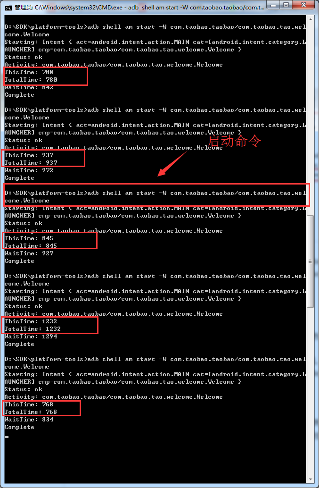

@(【安卓深入思考】)
#Android开发注意事项
[TOC]
##关注应用流畅性
1、切记不要在UI线程中执行数据库的查找，for循环的遍历等耗时操作。考虑用AsyncTask来做处理。
2、考虑在接口请求数据返回之后，中间尽量不要再插入其他操作导致接口数据请求成功后，加载状态依然在的情况。
比如：
|
|
3、关注性能，流畅性，处理for循环、数据库操作、文件读写等耗时操作，切记多考虑可能会出现的流畅性问题。
#避免在onCreate/onResume/onStart方法中耗时太长
- 冷启动：即杀掉应用后重新启动的速度
- 热启动：按back键后，应用还在后台运行
使用adb shell am start -W packagename/activity计算apk的启动时间。通过android stdio打印的日志看到淘宝app的包名是com.taobao.taobao，启动的activity为com.taobao.tao.welcome.Welcome
不应在Application以及Activity的生命周期回调中做任何费时操作，具体指标大概是在onCreate，onResume，onStart等回调中所花费的总时间最好不要超过400ms，否则用户在桌面点击你的应用图标后，将感觉到明显的卡顿。

##开发者工具-GPU显示配置文件
随着界面的刷新,界面上会滚动显示垂直的柱状图来表示每帧画面所需要渲染的时间，柱状图越高表示花费的渲染时间越长。中间有一根绿色的横线，代表16ms，我们需要确保每一帧花费的总时间都低于这条横线，这样才能够避免出现卡顿的问题。每一条柱状线都包含三部分，蓝色代表测量绘制Display List的时间，红色代表OpenGL渲染Display List所需要的时间，黄色代表CPU等待GPU处理的时间。
##使用Hierarchy Viewer分析app本质
文件位置在：
sdk/tools/hierarchyviewer
双击就可打开，分析app是webapp还是native app
比如淘宝首页分析是native app，这个怎么看出来的，打开这个工具慢慢发现就能知道。
##开发者选项-显示GPU过度渲染
蓝色，淡绿，淡红，深红代表了4种不同程度的Overdraw情况，我们的目标就是尽量减少红色Overdraw，看到更多的蓝色区域。Overdraw有时候是因为你的UI布局存在大量重叠的部分，还有的时候是因为非必须的重叠背景。例如某个Activity有一个背景，然后里面的Layout又有自己的背景，同时子View又分别有自己的背景。仅仅是通过移除非必须的背景图片，这就能够减少大量的红色Overdraw区域，增加蓝色区域的占比。这一措施能够显著提升程序性能。
##Inspect Code 对工程代码做静态扫描
通过Android Studio中的 Analyze->Inspect Code 对工程代码做静态扫描；找出潜在的问题代码并修改。里面也会包括很多安全隐患。api的兼容性等等。
##DDMS的TraceView工具测试
启动sdk/tools/ddms
然后选中需要测试的app进程，点击
然后对app进行操作，再次点击结束，会自动弹出一个TraceView的窗口。
1.使用说明：参考博客http://bxbxbai.github.io/2014/10/25/use-trace-view/
2.参数说明：
使用该工具分析淘宝客户端发现
淘宝的首页使用了recycleView实现，当然同时也嵌入了一个uc webview内核
要不然每次活动怎么开展。
附上一篇比较实用的案例：http://www.cnblogs.com/sunzn/p/3192231.html
##电量消耗
1.操作应用后，退出应用，让应用处于后台，一段时间后通过adb shell dumpsysbatterystats查看电量消耗日志看是否存在异常。
2.应用进入后台后不应异常消耗电量
3.推荐博客：http://hukai.me/android-performance-battery/
##内存抖动
介绍：内存抖动是因为大量的对象被创建又在短时间内马上被释放，瞬间产生大量的对象会严重占用YoungGeneration的内存区域，当达到阀值，剩余空间不够的时候，也会触发GC。即使每次分配的对象占用了很少的内存，但是他们叠加在一起会增加Heap的压力，从而触发更多其他类型的GC。这个操作有可能会影响到帧率，并使得用户感知到性能问题。
方法：如果你在Memory Monitor里面查看到短时间发生了多次内存的涨跌，这意味着很有可能发生了内存抖动
##性能检测网站nimbledroid
这个网站好像是需要翻墙的，也需要有一定英语水平。我把淘宝的放上去查看了下。点击画圈处，可以查看具体是什么导致的。感觉很方便。
选择一个进去看看。可以看到FEJSCaptureActivity在onCreat的时候耗时很长。其中还可以看到JSBridge,做过和web和native打交道的应该知道。从这里进一步印证，阿里的H5太多也是导致慢卡的一个原因。
再来看看淘宝的资源占比，通过分析这个，有利于我们对自己APP瘦身。当然好像android studio2.2好像也有一个工具可以分析app的资源占比。
通过对淘宝的简单分析，来总结一些，性能分析的一些工具方法等。我们可以看到几点原因。
a.淘宝本身的业务的复杂性，导致app过于庞大。在Application启动的时候，会初始化，加载很多东西。
b.使用太多的H5，需要app端去进行网络请求，获取服务器返回的数据，加载慢。这里并没有说h5不好，h5比native要灵活很多。不过最终还是建立在用户的接受程度上。
c.网速也是硬伤。